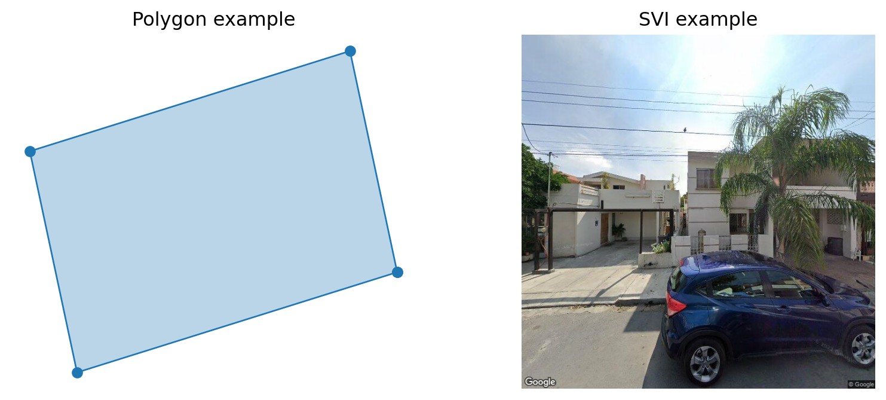

In this notebook I show the Clustering Wheel Visualization.
Opening the footprint data
### Open the data.from pathlib import Pathimport geopandas as gpdimport numpy as npfrom imageable.visualization.wheel_visualization import WheelElement, WheelVisualizationSRC_DATA_PATH = Path("/Users/legariapena.j/Library/CloudStorage/GoogleDrive-legariapena.j@husky.neu.edu/Shared drives/Cool and Carbon Free Africa/Building Image Datasets/data")#Ground truth Monterreyground_truth_monterrey_path = SRC_DATA_PATH/"monterrey"/"footprints"/"labelled_buildings_expanded.geojson"ground_truth_monterrey = gpd.read_file(ground_truth_monterrey_path)#From here we need to do our typical workflow: (1) open the batch notebooks, and (2) merge them.batches_names = ["1-1000","1000-2000","2000-3000", "3000-4000", "4000-5000", "5000-6000", "6000-7000", "7000=8000", "8000-9000", "9000-10000"]#Open all monterrey feature geojsonsmonterrey_geojsons = {}for i in [0, 1, 2, 3, 4, 5, 20, 21, 22, 23, 24, 25, 26]:if(i ==0): first_index = i*1000+1else: first_index = i*1000 second_index = (i+1)*1000 first_string ="Images "+f"{first_index} - {second_index}" file_path = SRC_DATA_PATH/"monterrey_dedup"/first_string/f"building_data_{first_index}_{second_index}.geojson" monterrey_geojsons[f"{first_index}-{second_index}"] = gpd.read_file(file_path)boston_geojsons = {}for i inrange(10):if(i ==0): first_index = i*1000+1else: first_index = i*1000 second_index = (i+1)*1000 first_string ="Images "+f"{first_index} - {second_index}" file_path = SRC_DATA_PATH/"boston"/first_string/f"building_data_{first_index}_{second_index}.geojson" boston_geojsons[batches_names[i]] = gpd.read_file(file_path)import pandas as pdgdf_monterrey = gpd.GeoDataFrame( pd.concat(monterrey_geojsons, ignore_index=True), crs = monterrey_geojsons[list(monterrey_geojsons.keys())[0]].crs)gdf_boston = gpd.GeoDataFrame( pd.concat(boston_geojsons, ignore_index =True), crs = boston_geojsons[list(boston_geojsons.keys())[0]].crs)gdf_boston.head()
unprojected_area
projected_area
longitude_difference
latitude_difference
n_vertices
shape_length
complexity
inverse_average_segment_length
vertices_per_area
average_complexity_per_segment
...
number_of_edges
number_of_vertices
average_window_x
average_window_y
average_door_x
average_door_y
number_of_windows
number_of_doors
building_id
geometry
0
1.178902e-08
197.662683
0.000144
0.000111
12
0.000480
40692.187881
25014.537585
1.017896e+09
3391.015657
...
0
0
0.0
0.0
0.0
0.0
0
0
building_1
POLYGON ((-71.1655 42.34636, -71.16558 42.3463...
1
5.572723e-09
93.436003
0.000122
0.000081
10
0.000317
56935.660910
31517.241332
1.794455e+09
5693.566091
...
0
0
0.0
0.0
0.0
0.0
0
0
building_2
POLYGON ((-71.1536 42.34629, -71.15363 42.3463...
2
1.477983e-08
247.807377
0.000208
0.000129
24
0.000592
40059.918891
40535.155665
1.623835e+09
1669.163287
...
0
0
0.0
0.0
0.0
0.0
0
0
building_3
POLYGON ((-71.1549 42.34607, -71.1549 42.34606...
3
9.968534e-09
167.138733
0.000147
0.000122
22
0.000438
43891.175946
50282.186041
2.206944e+09
1995.053452
...
0
0
0.0
0.0
0.0
0.0
0
0
building_4
POLYGON ((-71.15367 42.34617, -71.15367 42.346...
4
1.184711e-08
198.633247
0.000147
0.000116
18
0.000478
40342.445217
37661.507996
1.519357e+09
2241.246956
...
0
0
0.0
0.0
0.0
0.0
0
0
building_5
POLYGON ((-71.15387 42.34527, -71.1539 42.3452...
5 rows × 43 columns
The problem with gdf_boston and gdf_monterrey is that the material column contains dictionaries which need to be parsed before we reduce the feature list to the 23 features we mentioned in the paper.
Parsing the material column
#Parsing the material column#Let's define this useful function to separate the entries of the material dictionary into different columnsimport astimport jsondef expand_materials(gdf):#This would be a list of dictionaries. materials =list(gdf["material_percentages"]) materials = [ast.literal_eval(x) for x in materials] ALL_MATERIALS = ["asphalt","concrete","metal","road_marking","fabric_leather","glass","plaster", "plastic","rubber","sand", "gravel","ceramic","cobblestone","brick","grass","wood","leaf","water","human_body","sky"] BASE_STR ="material_pct_"#These would be all the materials keys = ALL_MATERIALSfor i inrange(len(keys)): material_name = keys[i] column_name = BASE_STR+material_name column_values = []for m in materials:#Case where the dictionary is emptyif(not m): column_values.append(None)#Case where there is a percentages option in m (need to check why this happens)elif(material_name notin m and"percentages"in m and material_name in m["percentages"]): column_values.append(m["percentages"][material_name])#Case where the dictionary just has materials: percentage.elif(material_name in m): column_values.append(m[material_name])else:print(m)print(material_name) gdf[column_name] = column_valuesreturn gdf#Then we simply apply it to our geojsonsgdf_monterrey = expand_materials(gdf_monterrey)gdf_boston = expand_materials(gdf_boston)gdf_monterrey = gdf_monterrey[gdf_monterrey["building_id"].isin(ground_truth_monterrey["building_id"])]gdf_all = gpd.GeoDataFrame( pd.concat([gdf_monterrey, gdf_boston], ignore_index =True), crs = gdf_boston.crs)gdf_all
unprojected_area
projected_area
longitude_difference
latitude_difference
n_vertices
shape_length
complexity
inverse_average_segment_length
vertices_per_area
average_complexity_per_segment
...
material_pct_gravel
material_pct_ceramic
material_pct_cobblestone
material_pct_brick
material_pct_grass
material_pct_wood
material_pct_leaf
material_pct_water
material_pct_human_body
material_pct_sky
0
1.149629e-08
158.031214
0.000163
0.000090
4
0.000458
39809.412053
8740.106127
3.479385e+08
9952.353013
...
0.0
0.006079
0.080073
0.006333
0.002561
0.032173
0.335181
0.0
0.000190
0.112612
1
4.016747e-08
552.152779
0.000172
0.000293
8
0.000880
21911.330608
9089.640421
1.991661e+08
2738.916326
...
0.0
0.003093
0.190300
0.000076
0.000000
0.007100
0.115291
0.0
0.000000
0.095559
2
1.000490e-07
1375.306771
0.000516
0.000658
22
0.001912
19115.317208
11503.457642
2.198922e+08
868.878055
...
0.0
0.001843
0.000000
0.000000
0.005469
0.000095
0.664204
0.0
0.000000
0.307939
3
1.696367e-08
233.189396
0.000194
0.000212
6
0.000620
36571.058105
9671.501624
3.536970e+08
6095.176351
...
0.0
0.009229
0.050425
0.000625
0.009043
0.000000
0.009487
0.0
0.002048
0.231938
4
1.240075e-09
17.046545
0.000051
0.000048
4
0.000141
114059.830411
28279.994306
3.225611e+09
28514.957603
...
0.0
0.004109
0.043132
0.000046
0.006470
0.000000
0.024421
0.0
0.001711
0.297773
...
...
...
...
...
...
...
...
...
...
...
...
...
...
...
...
...
...
...
...
...
...
21731
6.952494e-09
116.594025
0.000106
0.000074
9
0.000353
50772.049950
25496.300775
1.294499e+09
5641.338883
...
0.0
0.106001
0.000337
0.026111
0.000254
0.003303
0.237583
0.0
0.000000
0.363042
21732
6.446670e-09
108.111178
0.000095
0.000071
4
0.000325
50348.897425
12323.515224
6.204754e+08
12587.224356
...
0.0
0.062683
0.000125
0.048650
0.000000
0.028247
0.347830
0.0
0.000000
0.141057
21733
7.988841e-09
133.972897
0.000153
0.000055
6
0.000407
50988.018468
14729.884393
7.510476e+08
8498.003078
...
0.0
0.025801
0.000002
0.115947
0.000159
0.011997
0.111018
0.0
0.000000
0.210488
21734
7.669255e-09
128.613254
0.000150
0.000056
8
0.000406
52998.240393
19682.276624
1.043126e+09
6624.780049
...
0.0
0.103892
0.000308
0.114778
0.000020
0.004456
0.295559
0.0
0.000000
0.103062
21735
7.625457e-09
127.878844
0.000200
0.000046
9
0.000480
62975.295731
18741.589725
1.180257e+09
6997.255081
...
0.0
0.009277
0.000325
0.113667
0.000059
0.007156
0.094724
0.0
0.000000
0.103406
21736 rows × 63 columns
Opening the building dictionaries
At this point we have the footprint data which will allow us to show representative footprint polygons in the Cluster Wheel. Now let’s open the data dictionaries, which contain information about what cluster the buildings are mapped into.
DICTIONARIES_PATH ="/Users/legariapena.j/Documents/imageable-2026/imageable/data/training_validation_data/data.json"withopen(DICTIONARIES_PATH) as f: data = json.load(f)#Maps from index to distinct features. index_to_real_height = {int(d["index"]): float(d["real_height"]) for d in data if d.get("real_height") isnotNone}index_to_validation = {int(d["index"]): d["data_type"] for d in data}index_to_city = {int(d["index"]): d["city"] for d in data}index_to_cluster = {int(d["index"]): d["cluster"] for d in data}#Add the new columns to the GDFgdf_all["real_height"] = gdf_all.index.map(index_to_real_height)gdf_all["validation_type"] = gdf_all.index.map(index_to_validation)gdf_all["city"] = gdf_all.index.map(index_to_city)gdf_all["cluster"] = gdf_all.index.map(index_to_cluster)#One GDF per clustern_clusters =len(np.unique(gdf_all["cluster"])) -1clusters_gdfs =dict.fromkeys(range(n_clusters))for i inrange(n_clusters): clusters_gdfs[i] = gdf_all[gdf_all["cluster"] == i]
Collect the different features
For each cluster and each feature we need to collect a value, image or footprint.
import joblib#We need to scale back the normalized features.DISTANCE_SCALER_PATH ="/Users/legariapena.j/Documents/imageable-2026/imageable/data/models/cluster_ensemble_scaler.pkl"distance_scaler = joblib.load(DISTANCE_SCALER_PATH)FEATURE_NAME ="mean_distance_to_neighbors"distance_index = data[0]["feature_names"].index(FEATURE_NAME)index_to_distance = {int(d["index"]): float(distance_scaler.inverse_transform(np.array(d["features"]).reshape(1, -1))[0, distance_index])for d in data}feature_groups = [f"Cluster {i+1}"for i inrange(n_clusters)]wheel_elements_mnd = []for i inrange(n_clusters): gdf = clusters_gdfs[i] value = np.nanmean(np.asarray([index_to_distance[i] for i in gdf.index], dtype =float)) wheel_elements_mnd.append( WheelElement( data = value, group_name = feature_groups[i], feature_name = FEATURE_NAME ) )
Percentage of buildings in Monterrey
FEATURE_NAME ="monterrey_percentage"feature_values = []feature_groups = []for i inrange(n_clusters): gdf = clusters_gdfs[i] feats =list(gdf["city"]) n_monterrey =len([x for x in feats if x =="Monterrey"])if(len(feats) ==0): percentage =0else: percentage = (n_monterrey/len(feats))*100 feature_values.append(percentage) feature_groups.append(f"Cluster {i+1}")wheel_elements_monterrey = []for i inrange(n_clusters): wheel_element = WheelElement( data = feature_values[i], group_name = feature_groups[i], feature_name = FEATURE_NAME ) wheel_elements_monterrey.append(wheel_element)
Representative footprint and image
from pathlib import Pathimport joblibimport numpy as npfrom PIL import Imagemedian_footprints = []median_images = []cities = [x["city"] for x in data]def image_path_for(city: str, building_id: str) -> Path:"""Resolve the street-view image path for a building.""" ROOT = Path("/Users/legariapena.j/Library/CloudStorage/GoogleDrive-legariapena.j@husky.neu.edu/Shared drives/Cool and Carbon Free Africa/Building Image Datasets") n =int(str(building_id).split("_")[-1]) batch_index = (n -1) //1000 folder_low = batch_index *1000if batch_index >0else1 folder_high = (batch_index +1) *1000 folder =f"Images {folder_low} - {folder_high}" candidate = ROOT /"data"/ city / folder /str(building_id) /"image.jpg"if candidate.exists():return candidate# Fallback for datasets where last ids are still stored in previous 1000-range folder. prev_low =max(1, folder_low -1000) prev_high =max(1000, folder_high -1000) prev_folder =f"Images {prev_low} - {prev_high}" prev_candidate = ROOT /"data"/ city / prev_folder /str(building_id) /"image.jpg"return prev_candidate#We need the model to get the centroids of the clusters. As we want the representative images/footprints to be close to those centroids. model = joblib.load("/Users/legariapena.j/Documents/imageable-2026/imageable/data/models/cluster_ensemble_model.pkl")scaler = joblib.load("/Users/legariapena.j/Documents/imageable-2026/imageable/data/models/cluster_ensemble_scaler.pkl")full_feature_names =list(data[0]["feature_names"])cluster_feature_indices =list(model.feature_indices_used_for_clustering)centers = model.cluster_centers_#Here you can pick the k-th closest data point that you want to show. This is necessary because the image retrieval is not perfect and might contains some canyon views.centroid_pick_rank = [0, 6, 2, 2, 3, 2]#The number 6 means that we are showing the 6-th building closest to the centroid for the 2nd cluster.for i inrange(n_clusters): gdf = clusters_gdfs[i].copy()# 1) Build full feature matrix (same space used by scaler in training) X_full = gdf[full_feature_names].to_numpy(dtype=float) valid_mask = np.isfinite(X_full).all(axis=1)if valid_mask.sum() ==0:print(f"Cluster {i}: no valid rows")continue# 2) Scale full features, then keep only clustering subset (23 dims) X_full_valid = X_full[valid_mask] X_full_valid_scaled = scaler.transform(X_full_valid) X_cluster_valid_scaled = X_full_valid_scaled[:, cluster_feature_indices]# 3) Distance to cluster centroid c = centers[i] d = np.linalg.norm(X_cluster_valid_scaled - c, axis=1)# 4) Pick closest/2nd closest/etc. based on centroid_pick_rank valid_positions = np.where(valid_mask)[0] order = np.argsort(d) # ascending distance requested_rank =int(centroid_pick_rank[i]) requested_rank =max(requested_rank, 0)if requested_rank >=len(order): requested_rank =len(order) -1 best_rel =int(order[requested_rank]) best_pos =int(valid_positions[best_rel])#Add the representative footprint rep = gdf.iloc[best_pos] median_footprints.append(rep) building_id = rep["building_id"] row_idx =int(rep.name) city = index_to_city[row_idx] img_path = image_path_for(city, building_id) median_images.append(np.array(Image.open(img_path)))wheel_elements_images = []wheel_elements_footprints = []for i inrange(len(median_images)): wheel_element = WheelElement( data=median_images[i], group_name=f"Cluster {i+1}", feature_name="representative_image" ) wheel_elements_images.append(wheel_element) wheel_element_footprint = WheelElement( data=median_footprints[i].geometry, group_name=f"Cluster {i+1}", feature_name="representative_footprint" ) wheel_elements_footprints.append(wheel_element_footprint)from shapely.plotting import plot_polygonimport matplotlib.pyplot as pltfig, ax = plt.subplots(1, 2, figsize = (10, 4))plot_polygon(wheel_elements_footprints[0].data, ax = ax[0])ax[0].set_title("Polygon example")ax[0].set_axis_off()ax[1].imshow(wheel_elements_images[0].data)ax[1].set_title("SVI example")ax[1].set_axis_off()

Representative material
Get the material with the highest representation in the cluster.
VALID_MATERIALS = ["concrete", "metal", "glass", "plastic", "asphalt","brick", "human_body", "wood", "plaster", "leaf"]def _to_valid_material_percentages(materials):ifisinstance(materials, str): materials = ast.literal_eval(materials)if materials isNoneornotisinstance(materials, dict):return {}if"percentages"in materials: percentages = materials["percentages"]ifisinstance(percentages, str): percentages = ast.literal_eval(percentages)ifnotisinstance(percentages, dict):return {}else: percentages = materials filtered = {}for key, value in percentages.items():if key in VALID_MATERIALS andisinstance(value, (int, float)) and np.isfinite(value): filtered[key] =float(value) total =sum(filtered.values())if total >0: filtered = {k: v / total for k, v in filtered.items()}return filteredmedian_materials = []for i inrange(n_clusters): representative_materials = median_footprints[i]["material_percentages"] filtered = _to_valid_material_percentages(representative_materials)iflen(filtered) ==0: predominant ="unknown"else: predominant =max(filtered, key=filtered.get)if predominant =="human_body": predominant ="person"elif predominant =="leaf": predominant ="vegetation" median_materials.append(predominant)print()wheel_elements_predominant_material = []for i inrange(n_clusters): wheel_element = WheelElement( data=median_materials[i], group_name=f"Cluster {i+1}", feature_name="predominant_material" ) wheel_elements_predominant_material.append(wheel_element)